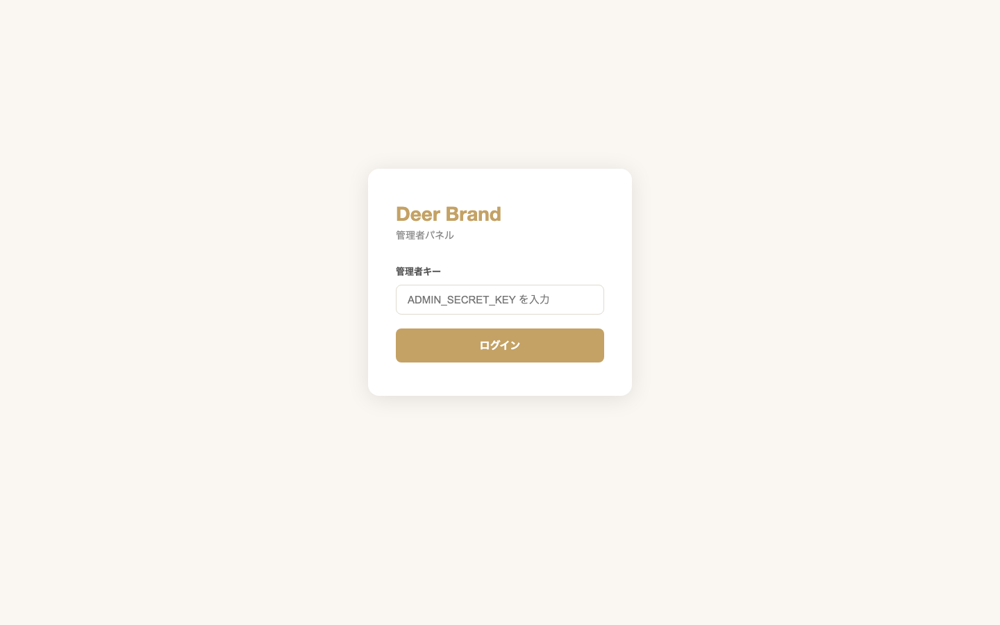

管理者パネルはDeer Brandの注文管理・Printful発注を行う専用ページです。
| 項目 |
内容 |
| URL |
https://deer-brand.vercel.app/admin.html |
| アクセス制限 |
管理者キー（ADMIN_SECRET_KEY）＋ TOTP二段階認証が必要 |
| 推奨ブラウザ |
Google Chrome（最新版） |
注意
管理者パネルのURLは公開しないでください。アクセスキーは必ず秘密に保管してください。

管理者ログイン画面 — ADMIN_SECRET_KEY を入力してログインします
-
ブラウザで
https://deer-brand.vercel.app/admin.html にアクセスする
-
「管理者キー」フィールドに
ADMIN_SECRET_KEY を入力する（環境変数の値）
- 「ログイン」ボタンをクリックする
- TOTP認証が有効な場合は、認証アプリの6桁コードを追加入力する
- ダッシュボードが表示されればログイン成功
ブルートフォース対策
ログイン失敗が10回連続すると、アカウントは30分間ロックされます。キーを忘れた場合はVercel環境変数を確認してください。
| エラーメッセージ |
原因 |
対処法 |
| 「認証に失敗しました」 |
管理者キーが間違っている |
Vercel環境変数 ADMIN_SECRET_KEY を確認 |
| 「アカウントがロックされています」 |
10回連続失敗 |
30分待つかFirestore adminMeta/loginAttempts を手動リセット |
| 「TOTPコードが無効です」 |
認証アプリの時刻がずれている |
デバイスの時刻を同期する |
ログイン後、以下の統計カードが表示されます。
| カード名 |
内容 |
| 総注文数 |
システム内の全注文件数 |
| 未処理 |
ステータスが「pending（受付済み）」の注文数 |
| 発送済み |
ステータスが「shipped（発送済み）」の注文数 |
| 完了 |
ステータスが「completed（完了）」の注文数 |
| 売上合計 |
全完了注文の合計金額（円） |
ダッシュボード上部のフィルタバーで以下の絞り込みが可能です。
| フィルタ |
選択肢 |
| ステータス |
すべて / 受付済み / 制作中 / 発送済み / 完了 / キャンセル |
| 表示件数 |
20件 / 50件 / 100件 |
| 注文ID検索 |
DEER-YYYYMMDD-XXXX 形式で検索 |
注文テーブルには以下の列が表示されます。
| 列名 |
内容 |
例 |
| 注文ID |
システムが自動生成する一意のID |
DEER-20260401-ABCD |
| 日時 |
注文受付日時 |
2026/04/01 19:30 |
| ユーザーID |
FirebaseのユーザーUID（短縮表示） |
abc123... |
| 商品 |
商品名・スタイル名・サイズ・カラー |
パーカー / 印象派 / M / グレー |
| 合計 |
税込み合計金額 |
¥7,980 |
| ステータス |
現在の処理状況（バッジ表示） |
受付済み |
| 操作 |
ステータス更新・Printful発注ボタン |
— |
ステータスバッジの色
| ステータス |
バッジ |
意味 |
| pending |
受付済み |
注文受付・決済完了。まだ処理開始前 |
| preparing |
制作中 |
Printful発注済み・制作進行中 |
| shipped |
発送済み |
Printfulから発送完了 |
| completed |
完了 |
配送完了・注文終了 |
| cancelled |
キャンセル |
キャンセル処理済み |
- 注文テーブルで対象の注文行を確認する
- 「操作」列の「ステータス変更」ドロップダウンをクリックする
-
変更先のステータスを選択する（preparing / shipped / completed /
cancelled）
- 確認ダイアログが表示されたら「OK」をクリックする
- ステータスバッジが更新されることを確認する
ステータス遷移の推奨順序
pending（受付済み）→ preparing（制作中）→ shipped（発送済み）→
completed（完了）
APIエンドポイント（参考）
POST /api/admin-api
{
"action": "update-status",
"adminKey": "YOUR_ADMIN_SECRET_KEY",
"orderId": "DEER-20260401-ABCD",
"status": "preparing"
}
Printfulはオンデマンド印刷・発送サービスです。注文ごとにPrintful
APIを通じて発注します。
-
注文テーブルでステータスが
受付済み の注文を見つける
- 対象行の「Printful発注」ボタンをクリックする
-
確認ダイアログが表示される（注文ID・商品情報・アート画像URLを確認）
- 「発注する」をクリックするとAPIが呼び出される
-
成功すると注文ステータスが自動で
制作中 に変わる
- Printfulの管理画面でも注文が確認できることを確認する
発注に必要な条件
アート画像URL（artImageUrl）がFirestoreの注文データに保存されている必要があります。画像URLが存在しない場合は発注ボタンが無効になります。
APIエンドポイント（参考）
POST /api/admin-api
{
"action": "create-printful-order",
"adminKey": "YOUR_ADMIN_SECRET_KEY",
"orderId": "DEER-20260401-ABCD",
"artImageUrl": "https://storage.example.com/art/abc.png"
}
| エラー |
原因 |
対処 |
| artImageUrl が空 |
AI生成画像が未保存 |
Firebaseストレージでアート画像を確認 |
| Printful API エラー |
APIキーまたは商品ID不正 |
環境変数 PRINTFUL_API_KEY・商品マッピングを確認 |
| 重複発注エラー |
同じ注文で2回発注 |
ステータスが「preparing」以降は発注ボタンが無効になる |
| 仕様 |
詳細 |
| 認証方式 |
管理者キー（ADMIN_SECRET_KEY） + TOTP二段階認証（RFC 6238） |
| ブルートフォース対策 |
10回連続失敗で30分ロック（Firestore: adminMeta/loginAttempts）
|
| セッション管理 |
sessionStorage に adminKey を保存（タブを閉じると消去） |
| APIセキュリティ |
全APIリクエストに adminKey が必須。サーバーサイドで検証 |
| ログ |
ログイン試行・発注操作はFirestoreに記録 |
定期的なキーローテーション推奨
ADMIN_SECRET_KEY
は3ヶ月ごとにVercel環境変数で更新することを推奨します。